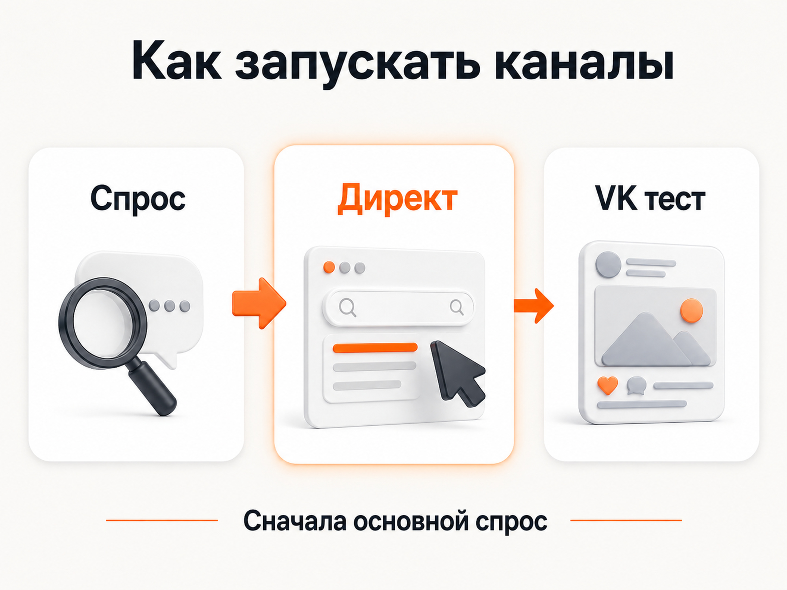

Блог о платном трафике
Реклама ВК или Яндекс Директ: что выбрать для бизнеса
Если выбирать только один рекламный канал, для большинства бизнесов я бы выбрал Яндекс Директ.
Причина простая: Директ позволяет работать с людьми, которые уже ищут конкретный товар или услугу. В VK Рекламе чаще приходится сначала находить потенциально подходящую аудиторию, привлекать ее внимание и только потом пытаться довести до заявки.
Поэтому я не считаю VK Рекламу полноценной альтернативой Яндекс Директу для большинства ниш. Скорее это дополнительный канал, который можно тестировать после основного или использовать в тех случаях, где механика социальных сетей действительно подходит продукту.
Главное отличие VK Рекламы от Яндекс Директа
Разница начинается не с рекламных кабинетов и настроек, а с поведения человека в момент показа рекламы.
Когда пользователь вводит в Яндексе запрос «установить кондиционер», «юрист по банкротству» или «купить промышленный компрессор», он уже обозначил свою потребность.
Поисковая реклама в Яндекс Директе появляется непосредственно в результатах поиска и отвечает на этот запрос. Сам Яндекс описывает такую механику как показ контекстного объявления пользователю, который ищет соответствующий товар или услугу.
В VK ситуация другая. Человек может смотреть ленту, видео, читать контент или пользоваться другим проектом экосистемы. Рекламная система пытается определить, какое предложение ему потенциально подходит, используя сведения об интересах, поведении, взаимодействии с контентом и рекламой.
У VK Рекламы есть ключевые фразы, сообщества, интересы, ретаргетинг и другие способы подбора аудитории. Но даже таргетинг по ключевым фразам не превращает рекламу в полноценную поисковую выдачу. Пользователь не обязательно видит объявление именно в тот момент, когда решает свою задачу.
Отсюда и основная разница:
Яндекс чаще забирает уже существующий спрос. VK чаще пытается найти подходящего человека внутри своей аудитории.

Сравнение VK Рекламы и Яндекс Директа
| Параметр | Яндекс Директ | VK Реклама |
|---|---|---|
| Намерение пользователя | На Поиске может быть очень высоким | Обычно ниже |
| Работа со сформированным спросом | Сильная сторона | Ограниченная |
| Таргетинг | Запросы, автотаргетинг, интересы, сегменты, ретаргетинг | Интересы, поведение, ключевые фразы, сообщества, аудитории |
| Основная механика | Найти человека, который уже ищет решение | Найти человека, которому предложение потенциально интересно |
| Зависимость от креативов | Есть, особенно в РСЯ | Обычно значительно выше |
| Сложные услуги и B2B | Часто подходит хорошо | Чаще используется как дополнительный тест |
| Инфобизнес, контентные продукты, сообщества | Может работать | Часто выглядит логичнее |
| Роль в рекламной стратегии | Основной канал | Дополнительный канал или отдельная гипотеза |
Это не означает, что любая кампания в Директе автоматически будет эффективной, а реклама ВКонтакте всегда окажется плохой. У обоих каналов можно получить как хороший, так и плохой результат.
Но если бизнес спрашивает именно «куда сначала вложить рекламный бюджет», я в большинстве случаев начну с Яндекса.
Почему я бы сначала запускал Яндекс Директ
Можно работать с уже сформированным спросом
Это главное преимущество.
Если человек сам ищет ваш продукт, не нужно сначала убеждать его заинтересоваться категорией. Нужно показать подходящее предложение и привести на нормальную посадочную страницу.
Особенно сильно это преимущество проявляется там, где потребность формулируется конкретным поисковым запросом:
- юридические услуги;
- медицина;
- ремонт;
- строительство;
- производство;
- оборудование;
- B2B;
- недвижимость;
- различные локальные услуги;
- товары, которые человек целенаправленно выбирает.
статья о Яндекс Директе для B2B
В таких проектах я не вижу большой логики начинать именно с VK, если в Яндексе уже существует нормальный объем целевого спроса.
Директ давно не ограничивается только поиском
Сравнение «Яндекс - это поисковые запросы, VK - это аудитории» сегодня слишком упрощенное.
В Единой перфоманс-кампании Яндекс Директа доступны Поиск, Рекламная сеть Яндекса и Карты. На уровне групп можно использовать автотаргетинг, тематические слова, интересы и привычки, сегменты аудитории и другие условия.
То есть внутри одного рекламного инструмента можно работать и с горячим спросом, и с более широкой аудиторией.
Для меня это еще один аргумент в пользу Директа как основного рекламного канала.
статья «Как настроить Яндекс Директ в 2026 году»
Результат проще привязать к реальной потребности
На Поиске можно анализировать реальные поисковые запросы и понимать, с каким намерением люди приходят на сайт.
Это особенно полезно в сложных нишах.
Допустим, компания продает промышленное оборудование. По запросам видно, искал человек конкретный тип оборудования, запчасть, инструкцию, работу или вообще информацию для учебы.
В социальной рекламе причин, почему алгоритм отнес пользователя к потенциальной аудитории, обычно значительно больше. Поэтому специалист сильнее зависит от качества самой модели подбора аудитории и накопленных данных.
Почему VK Реклама для меня скорее дополнительный канал
VK Реклама охватывает проекты VK и рекламную сеть. Сама платформа продолжает развиваться: в 2026 году VK начала переводить рекламные технологии на единую Discovery-платформу и сообщала об улучшении ряда рекламных показателей в собственных экспериментах.
То есть говорить, что система технически стоит на месте, было бы неправильно.
Но для бизнеса вопрос в другом: может ли VK стабильно заменить канал, где человек непосредственно сообщает поисковой системе, что ему сейчас нужно?
В большинстве привычных мне performance-задач я бы на это не рассчитывал.
Аудитория находится в другом состоянии
Пользователь VK чаще пришел потреблять контент, общаться или развлекаться.
Чтобы он переключился на рекламу, креатив сначала должен остановить внимание. Затем предложение должно заинтересовать человека настолько, чтобы он покинул текущий сценарий и совершил нужное действие.
На Поиске часть этой работы уже сделана самим пользователем: он самостоятельно начал искать решение.
Таргетинг не гарантирует наличие реального спроса
Можно выбрать интерес, подписчиков тематических сообществ или пользователей, связанных с определенными ключевыми фразами.
Но человек, которого система определила как потенциально подходящего, и человек, который прямо сейчас написал в поиске «заказать кухню на заказ», находятся на разных стадиях спроса.
Поэтому я бы не сравнивал эти аудитории только по стоимости клика.
Сильнее влияет рекламный креатив
В VK нужно бороться за внимание внутри контента.
Из-за этого результат сильнее зависит от:
- изображения или видео;
- первого экрана;
- оффера;
- формата объявления;
- способности заинтересовать холодного пользователя;
- посадочной страницы или лид-формы.
Для некоторых продуктов это нормальная механика. Для других она создает лишний этап между рекламой и продажей.
Когда реклама ВК все-таки имеет смысл
Я бы рассматривал VK Рекламу в нескольких ситуациях.
Первая - продукт сложно искать через обычный сформированный запрос. Например, человек еще не знает о продукте или не формулирует потребность через поиск.
Вторая - продукт хорошо продается через контент, эмоцию, визуальную демонстрацию или постепенный прогрев. Сюда могут относиться отдельные направления онлайн-образования, инфопродукты, мероприятия, сообщества и некоторые массовые потребительские товары.
Третья - задача заключается именно в развитии присутствия внутри экосистемы VK. Например, нужно привлекать подписчиков или продвигать контент. В 2026 году VK Реклама отдельно развивает инструменты для продвижения каналов и подписок.
Четвертая - основной спрос в Яндекс Директе уже отработан и бизнес ищет дополнительный объем.
Именно в такой последовательности мне понятнее использовать VK: сначала забрать наиболее очевидный существующий спрос, потом искать дополнительные источники.
Стоит ли одновременно запускать VK и Яндекс Директ
Можно, если бюджета достаточно для нормального тестирования двух каналов.
Но я бы не делил небольшой рекламный бюджет пополам только ради присутствия сразу в двух системах.
Например, если компания располагает ограниченным бюджетом и ее услуги уже активно ищут через Яндекс, логичнее сначала получить статистику в Директе. После этого часть дополнительных денег можно направить на проверку VK.
Если оба источника запустить сразу с маленькими бюджетами, есть риск получить недостаточно данных в каждом и сделать выводы по случайным результатам.

Как правильно сравнивать результаты VK и Яндекс Директа
Главная ошибка - сравнить цену клика или даже стоимость заявки и на этом выбрать победителя.
Предположим, VK дает заявки дешевле Яндекса. На первый взгляд результат отличный.
Но после обработки обращений может оказаться, что из Яндекса приходят люди с конкретной потребностью, а значительная часть заявок из VK просто интересовалась предложением.
Тогда дешевый CPL ничего не решает.
Я бы сравнивал минимум:
- количество целевых заявок;
- стоимость квалифицированного лида;
- количество продаж;
- стоимость продажи;
- выручку;
- окупаемость рекламы.
Рекламному кабинету несложно показать красивую стоимость клика или заявки. Бизнес зарабатывает на продажах.
Что выбрать для B2B и сложных услуг
При наличии сформированного спроса - Яндекс Директ.
Человек, которому нужно оборудование, юридическая помощь, производственная услуга или подрядчик для сложного проекта, обычно начинает искать варианты и сравнивать предложения.
Такого пользователя намного интереснее встретить в момент поиска, чем пытаться угадать его потребность по косвенным признакам.
VK в подобных проектах можно тестировать дополнительно: использовать отдельные аудитории, ретаргетинг, контент или конкретные гипотезы.
Но делать его основной рекламной системой вместо Директа я бы без веской причины не стал.
Что выбрать для инфобизнеса и контентных проектов
Здесь разница уже не настолько однозначная.
Если человеку сначала нужно посмотреть бесплатный материал, подписаться, пройти вебинар, почитать автора и только потом купить продукт, социальная среда подходит под такую воронку естественнее.
VK Реклама в этом случае может быть полноценным самостоятельным тестом.
Но если существует прямой поисковый спрос вроде «курсы английского онлайн» или «обучение массажу», я все равно проверял бы Яндекс Директ.
Каналы не обязательно исключают друг друга.
VK или Яндекс Директ: что в итоге лучше
Для большинства бизнесов со сформированным спросом мой выбор - Яндекс Директ.
Особенно если речь идет об услугах, B2B, дорогих товарах, производстве, строительстве или других направлениях, где человек осознанно ищет исполнителя или поставщика.
VK Реклама я бы рассматривал как дополнительный источник трафика, отдельную экспериментальную гипотезу или основной канал только в тех проектах, где сама механика социальной рекламы соответствует воронке продаж.
Если бюджет ограничен и нужно выбрать что-то одно, распыляться между системами я бы не стал. Сначала нужно проверить Яндекс Директ и забрать существующий спрос. Затем, если нужна дополнительная аудитория, можно тестировать VK.
статья «Контекстная или таргетированная реклама»